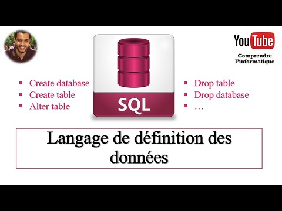
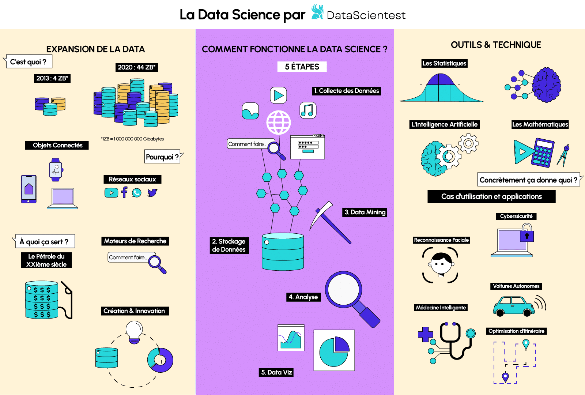
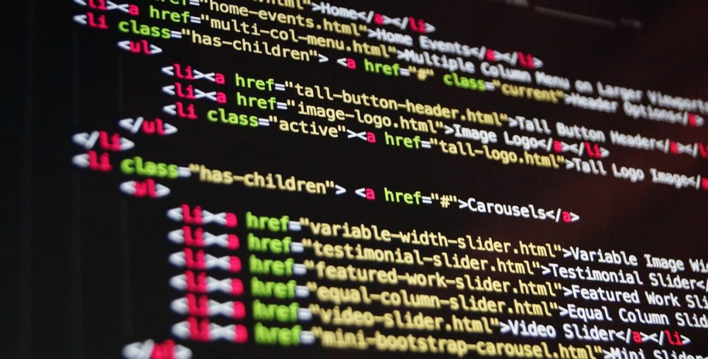

| Notions | Défintion | Images |
| Maintenance Informatique | La maintenance informatique comprend un ensemble de dispositifs et de solutions mis en place pour répondre à un objectif : maintenir en condition opérationnelle le système d’information et préserver son intégrité. La maintenance n’est donc pas un sprint mais une course de fond. De manière ponctuelle ou continue, des opérations de surveillance et de corrections sont entreprises. Elles peuvent être réalisées par les équipes internes à l’organisation concernée ou par un ou plusieurs prestataires externes. Selon les opérations concernées et le contexte client, la maintenance peut être opérée à distance ou en intervention sur site. |  |
| SQL | Le langage SQL (Structured Query Language) est un langage informatique utilisé pour exploiter des bases de données. Il permet de façon générale la définition, la manipulation et le contrôle de sécurité de données. Dans la pratique, le langage SQL est utilisé pour créer des tables, ajouter des enregistrements sous forme de lignes, interroger une base de données, la mettre à jour, ou encore gérer les droits d'utilisateurs de cette base de données. Il est bien supporté par la très grande majorité des systèmes de gestion de base de données (SGBD). Créé au début des années 1970 par Donald D. Chamberlin et Raymond F. Boyce, tous deux chez IBM, le langage SQL est aujourd'hui reconnu comme une norme internationale. |  |
| Data Analytics | La data analytics, autrement dit l'analytique de la donnée, parfois aussi appelée analyse de données, consiste à explorer, transformer et analyser les données afin d'identifier les tendances et les schémas qui révèlent des informations exploitables pertinentes et améliorent l'efficacité, ce qui contribue à optimiser la prise de décision. Une stratégie moderne de data analytics permet aux systèmes et aux entreprises d'agir en fonction d'analyses automatisées en temps réel, ce qui garantit des résultats immédiats et percutants. |  |
| HTML | L'HyperText Markup Language, HTML, désigne un type de langage informatique descriptif. Il s'agit plus précisément d'un format de données utilisé dans l'univers d'Internet pour la mise en forme des pages Web. Il permet, entre autres, d'écrire de l'hypertexte, mais aussi d'introduire des ressources multimédias dans un contenu. |  |